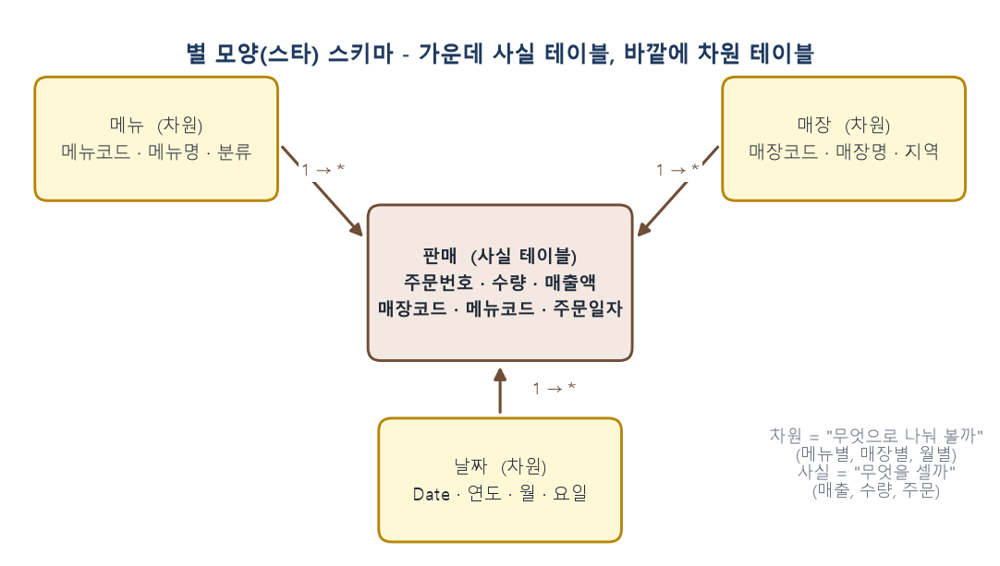
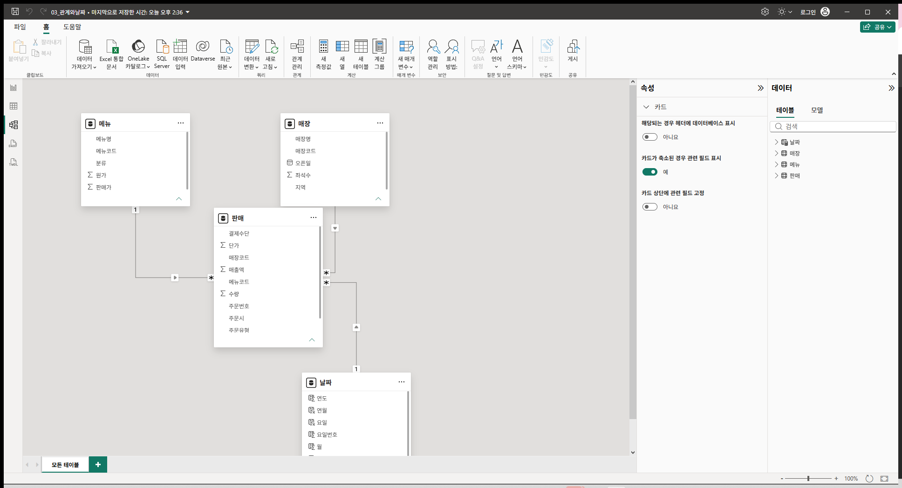
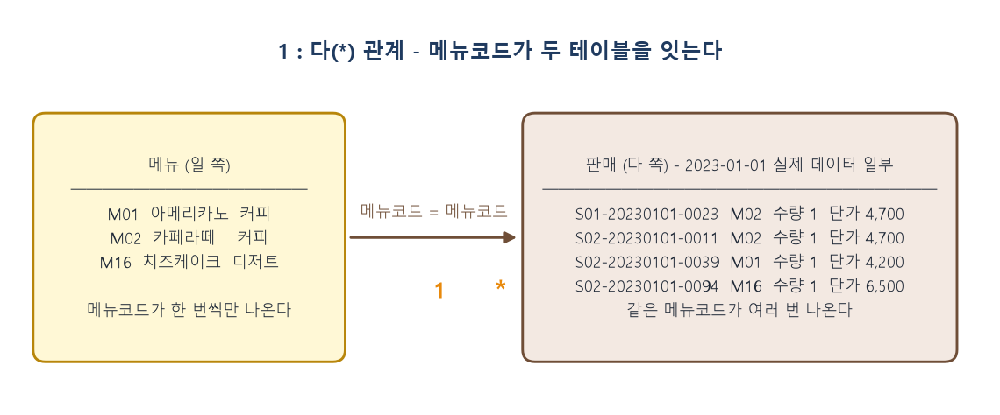
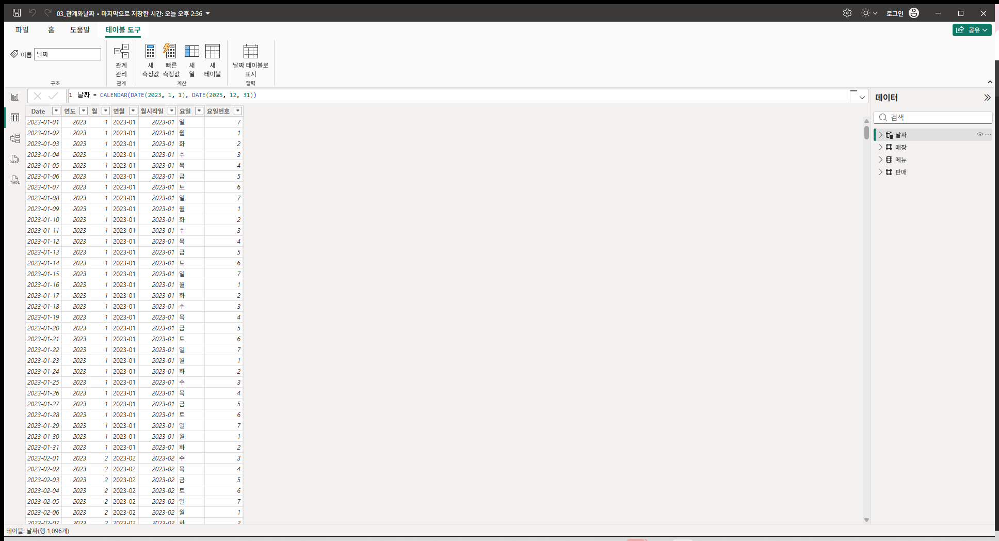
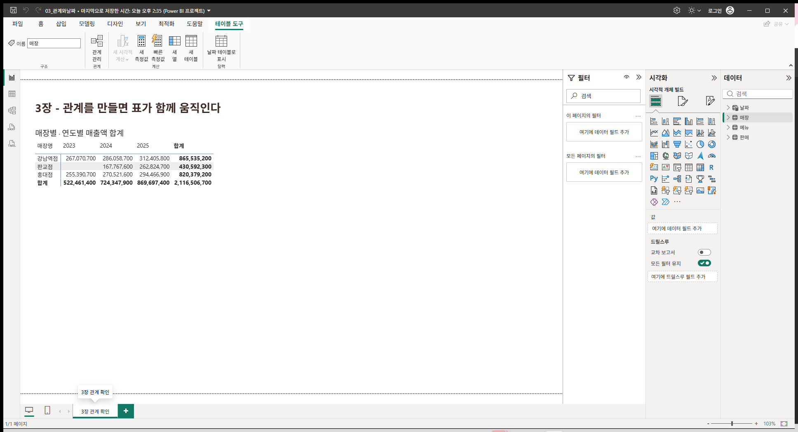

3장. 관계와 날짜 테이블
학습 목표
- 사실 테이블과 차원 테이블, 별 모양 모델을 설명할 수 있다.
- 모델 보기에서 테이블 사이의 관계(1 : 다)를 만들고 확인한다.
- DAX 로 날짜 테이블을 만들고, 열을 추가하고, 날짜 테이블로 표시한다.
- 관계가 있어야 "매장별·연도별 매출" 같은 분석이 된다는 것을 확인한다.
3-1. 테이블을 나눠 두는 이유
판매 표에는 S01, M02 같은 코드만 있다. 매장 이름이나 메뉴 분류는 매장·메뉴 표에 따로 있다. 판매 36만 줄마다 "강남역점, 서울, 48석" 을 반복해 적으면 용량이 커지고, 매장 이름이 바뀌면 36만 줄을 다 고쳐야 한다. 그래서 데이터는 보통 이렇게 나뉘어 있다.

| 종류 | 이 과정에서 | 특징 |
|---|---|---|
| 사실(Fact) 테이블 | 판매 | 사건(주문)이 일어날 때마다 줄이 늘어난다. 숫자(수량, 매출액)가 있다 |
| 차원(Dimension) 테이블 | 메뉴, 매장, 날짜 | 무엇으로 나눠 볼지 정하는 설명 정보. 줄이 적다 |
Power BI 는 이 표들을 관계로 이어서, 판매 표에 없는 "매장명" 이나 "분류" 로도 매출을 나눠 볼 수 있게 한다.
3-2. 모델 보기에서 관계 확인하기
왼쪽 보기 단추에서 세 번째 모델 보기 를 누른다. 테이블이 상자로 보이고, 관계는 상자 사이의 선으로 보인다.

이미 선이 있나요? Power BI 는 데이터를 불러올 때 열 이름이 같은 열(메뉴코드, 매장코드)을 찾아 관계를 자동으로 만들기도 한다. 이미 있으면 아래 3-3 은 확인만 하고 넘어가면 된다.

선의 양 끝 표시를 읽는 법:
- 1 - 메뉴 쪽. 메뉴코드가 한 번씩만 나온다 (2장에서 중복을 지운 이유!)
- * (다) - 판매 쪽. 같은 메뉴코드가 여러 번 나온다.
- 선 가운데 화살표 - 필터가 흐르는 방향. 메뉴 → 판매. "분류 = 커피" 를 고르면 판매 표도 커피 줄만 남는다.
3-3. 관계 만들기 - 메뉴와 매장
선이 없다면 직접 만든다.
- 모델 보기에서 메뉴 상자의 메뉴코드 를 끌어서 판매 상자의 메뉴코드 위에 놓는다.
- 새 관계 창이 열린다. 카디널리티 다대일(*:1) 또는 일대다(1:*), 교차 필터 방향 단일 인지 확인하고 저장.
- 같은 방법으로 매장[매장코드] → 판매[매장코드] 를 잇는다.
관계 선을 두 번 누르면 설정을 다시 볼 수 있다. 잘못 만든 관계는 선을 오른쪽 클릭 → 삭제.
3-4. 날짜 테이블 만들기
월별·요일별로 보려면 날짜마다 연도, 월, 요일을 알려 주는 날짜 테이블이 있으면 편하다. 판매가 없는 날(휴일 등)도 빠짐없이 들어 있어야 하므로 판매 표의 날짜를 쓰지 않고 따로 만든다.
- 리본 모델링 → 새 테이블.
- 위쪽 수식 입력줄에 다음을 입력하고 Enter.
날짜 = CALENDAR(DATE(2023, 1, 1), DATE(2025, 12, 31))
CALENDAR(시작일, 끝일) 은 시작일부터 끝일까지 하루에 한 줄씩, Date 라는 열 하나짜리 표를 만든다. 3년이라 1,096줄(2024년은 윤년)이다.
이런 식을 DAX(Data Analysis Expressions)라고 한다. 엑셀 수식과 비슷하게 생긴 Power BI 의 계산 언어다.
- 날짜 테이블을 고른 채로 테이블 도구 → 새 열 을 눌러 아래 열을 하나씩 추가한다. (식 하나 입력 → Enter → 다시 새 열)
연도 = YEAR('날짜'[Date])
월 = MONTH('날짜'[Date])
연월 = FORMAT('날짜'[Date], "yyyy-mm")
월시작일 = DATE(YEAR('날짜'[Date]), MONTH('날짜'[Date]), 1)
요일 = FORMAT('날짜'[Date], "aaa")
요일번호 = WEEKDAY('날짜'[Date], 2)
| 열 | 함수 | 결과 예 (2024-07-15) |
|---|---|---|
| 연도 | YEAR |
2024 |
| 월 | MONTH |
7 |
| 연월 | FORMAT(날짜, "yyyy-mm") |
2024-07 |
| 월시작일 | 그 달 1일 | 2024-07-01 (5장의 월별 추이 차트 축) |
| 요일 | FORMAT(날짜, "aaa") |
월 |
| 요일번호 | WEEKDAY(날짜, 2) |
1 (월=1 … 일=7) |
'날짜'[Date] 처럼 테이블 이름을 작은따옴표로 감싸야 한다. DAX 는 한글 테이블 이름을 따옴표 없이 쓰면 "잘못된 토큰" 오류를 낸다. 수식 입력줄에서
'를 치면 자동 완성 목록이 나오니 골라서 넣자.

3-5. 날짜 테이블로 표시, 요일 정렬
- 날짜 테이블을 고르고 테이블 도구 → 날짜 테이블로 표시 → 날짜 열 Date → 저장. 이제 Power BI 가 이 표를 "공식 달력" 으로 쓴다.
- 테이블 보기에서 요일 열을 고르고 열 도구 → 열 기준 정렬 → 요일번호. 이렇게 하지 않으면 요일이 가나다순(금, 목, 수, 월 …)으로 정렬된다.
3-6. 날짜 관계 만들기
모델 보기에서 날짜[Date] 를 끌어 판매[주문일자] 위에 놓는다 (일대다, 단일). 이제 관계가 세 개다.
| 일(1) 쪽 | 다(*) 쪽 |
|---|---|
| 메뉴[메뉴코드] | 판매[메뉴코드] |
| 매장[매장코드] | 판매[매장코드] |
| 날짜[Date] | 판매[주문일자] |
3-7. 관계가 잘 됐는지 확인하기
보고서 보기에서 행렬 시각적 개체를 하나 만든다.
- 시각화 창의 행렬 아이콘을 누른다.
- 데이터 창에서 매장 → 매장명 을 행 칸에, 날짜 → 연도 를 열 칸에, 판매 → 매출액 을 값 칸에 끌어 놓는다.

매장명(매장 표)과 연도(날짜 표)는 판매 표에 없는 열인데도 매출액이 매장·연도별로 나뉘었다. 관계가 일하고 있다는 증거다. 판교점의 2023년 칸이 비어 있는 것도 맞다. 2024년 3월에 열었기 때문이다.
모든 칸에 같은 숫자(전체 합계)가 나온다면 관계가 없거나 잘못 이어진 것이다. 모델 보기에서 선을 확인하자.
정리
- 사실 테이블(판매) + 차원 테이블(메뉴, 매장, 날짜) = 별 모양 모델.
- 관계는 차원의 키(1) → 사실의 같은 열(*). 필터는 1 → * 방향으로 흐른다.
- 날짜 테이블:
CALENDAR로 만들고, 새 열(연도·월·요일…)을 더하고, 날짜 테이블로 표시. - DAX 에서 한글 테이블 이름은
'날짜'[Date]처럼 작은따옴표로 감싼다.
확인 문제
- 메뉴 표에 콜드브루가 두 줄 남아 있었다면, 메뉴 → 판매 관계를 만들 때 어떤 일이 생길지 쓰시오.
- 요일 열에 열 기준 정렬 을 하지 않으면 요일별 차트의 막대 순서가 어떻게 되는가?
날짜 = CALENDAR(DATE(2023,1,1), DATE(2025,12,31))를 입력했더니 "잘못된 토큰" 이 아니라 행이 1,096개 생겼다. 2023~2025년의 날 수를 계산해 맞는지 확인하시오.- 3-7 의 행렬에 메뉴 → 분류 를 행 칸의 매장명 아래에 하나 더 넣으면 어떻게 보이는가?